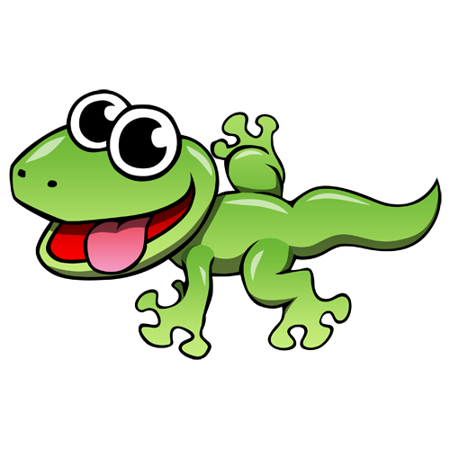
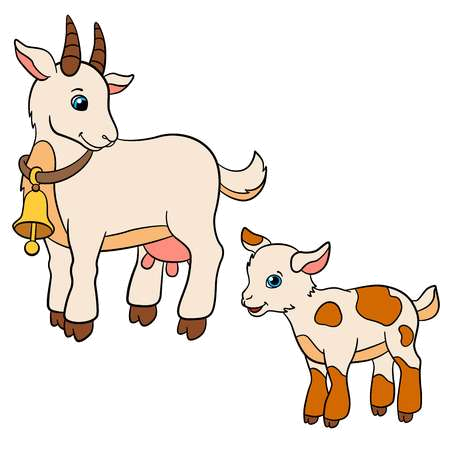
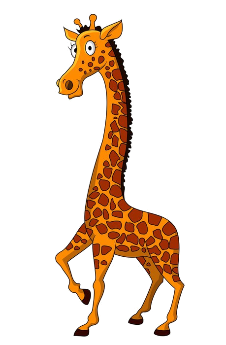
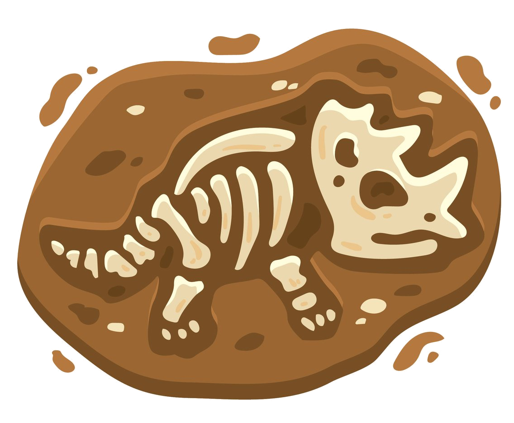

Teaching Evolution for Primary Children
Home
Addressing Misconceptions
Lesson Plans
Lesson 1
Lesson 2
Lesson 3
Lesson 4
Useful Links
Keywords
About

Lesson 1
Variation and Natural Selection
Lizard drawing Chinese-whispers to introduce basic concepts of evolution.
Low ability or introductory.

Lesson 2
Animal Variation
NC Point 1 - Recognising that offspring normally vary from their parents.
Introductory for variation.

Lesson 3
Natural Selection
NC Point 2 - Identifying how animals and plants are adapted to their environments through games
Recommended to complete lesson 2 first.

Lesson 4
Evolutionary Trees
NC Point 3 - Recognising living things have changed over time and fossils provide evidence.
Recommended to complete lessons 2 and 3 first.